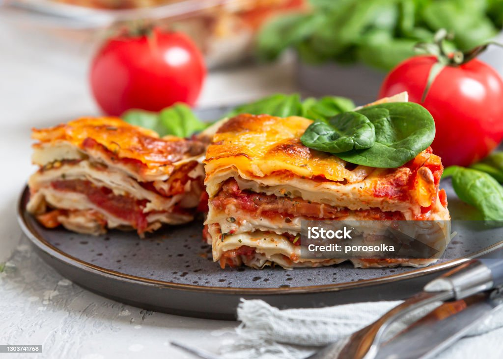

Paella Valenciana
| Entrada: |
Plato principal: |
Postre: |
| Gazpacho andaluzo |
Paella Valenciana |
Flan de naranja |

INGREDIENTES
- 400g de arroz bomba
- 1 pollo troceado (800g)
- 200g de conejo (opcional)
- 150g de judías verdes
- 100g de garrofón (o habas)
- 2 tomates maduros rallados
Preparacion
- Calienta aceite en la paellera a fuego medio-alto.
- Añade el pollo y el conejo troceados. Sazona con sal y dora bien por todos lados (10-12 minutos).
- Incorpora las judías verdes y el garrofón. Sofríe durante 5 minutos.
- Añade el pimiento cortado en tiras y los ajos picados. Cocina 3 minutos más.
- Agrega el tomate rallado y cocina hasta que se evapore el agua (5 minutos).
- Espolvorea el pimentón, remueve rápidamente y añade inmediatamente el caldo para que el pimentón no se queme.
- Añade el azafrán previamente tostado y desmenuzado. Lleva a ebullición.
- Incorpora el arroz distribuyéndolo uniformemente por toda la paellera. Cocina a fuego fuerte durante 10 minutos.
- Reduce el fuego a medio-bajo y continúa la cocción otros 8 minutos.
- Apaga el fuego, coloca unas ramas de romero encima y cubre con un paño limpio. Deja reposar 5 minutos antes de servir.